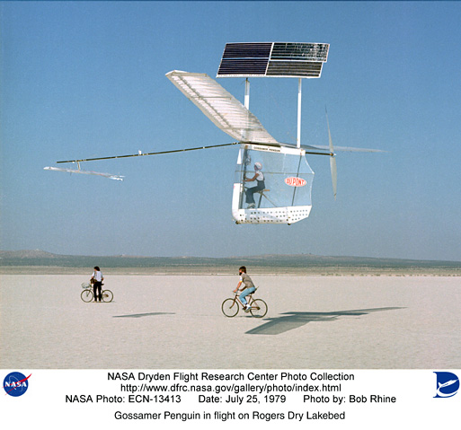

Solar-Powered Airplanes
Steady progress in zero emissions, solar-powered airplanes recently culminated in an unofficial endurance record of 54 hours by a remote-controlled airplane called Zephyr, built by Qinetiq. Another solar-powered airplane, the Solar Impulse, hit the headlines recently when the team building the airplane announced the launch of their prototype that will, they hope, carry a pilot around the globe in a series of flights.
 Helios Prototype:Solar-powered flying wingImage courtesy of NASA
Helios Prototype:Solar-powered flying wingImage courtesy of NASA
History
Given the publicity surrounding the recent solar-powered airplane announcements, you'd think they are a new phenomenon, but you'd be wrong. The history of solar-powered airplanes is dominated by 2 companies:
- Astro Flight – first to fly a remote-controlled solar-powered airplane, Sunrise I, in 1974
- AeroVironment – first to fly a piloted solar-powered airplane, Gossamer Penguin, in 1980
With funding from various sources (mainly NASA) and for various purposes (mainly military), AeroVironment (founded in 1971 by legendary designer, Paul MacCready), more than any other company, has pushed solar-powered airplanes to ever greater altitudes and durations.
The Solar Challenger, built by AeroVironment and powered by Astro Flight's photovoltaic cells and motor, carried a pilot across the English Channel in 1981. Then, during the 1980's and 1990's, AeroVironment built a series of remote-controlled solar airplanes within NASA's Pathfinder and Helios programs. These airplanes uniquely incorporated photovoltaic cells into the upper surfaces of high-aspect-ratio flying wings. Multiple (14 on the Helios prototype) electric-powered propellers provided propulsion.
Helios, AeroVironment's most advanced solar airplane, had a 247ft (75m) wingspan and reached 96,863ft (29,524m) during early flights. It incorporated batteries to extend its range in reduced light. Helios also had the option to carry a fuel cell with regenerative and non-regenerative modes to extend its continuous flight time to months. The full capabilities of Helios were never realized as it was destroyed in a crash in 2003.
As an aside, AeroVironment, again with motors from Astro Flight and funding from General Motors (GM), built the Sunraycer, which dominated the first solar car race held in 1987 (second place was 2 days behind). GM again turned to AeroVironment to build the Impact electric car prototype – the forerunner of the first production electric car, the GM EV-1.
Features
From the very beginning of the solar-powered airplane revolution, the Sunrise I from Astro Flight incorporated fundamental features that can still be found on the latest variants of such airplanes – i.e., photovoltaic cells that convert sunlight into electricity to drive propellers.
Given the relatively low energy yield of photovoltaic cells compared to kerosene (aviation fuel), solar-powered airplanes are optimized for low-speed, high-altitude flying. In aerodynamic terms this means high-aspect-ratio wings, where the span of the wing is much larger than the airfoil chord length. High-aspect-ratio wings also have the additional benefit of a large surface area on which to mount photovoltaic cells that convert sunlight to electricity. Of course, without sunlight photovoltaic cells are useless, so higher altitudes are preferable to be above the clouds that either block or diffuse sunlight.
Gossamer Penguin: First piloted solar-powered airplaneImage courtesy of NASA
With underpowered airplanes, minimizing weight is another primary concern, and so solar-powered airplanes use various weight-saving materials, such as carbon fiber, in their construction. Early piloted solar airplanes (e.g., Gossamer Penguin) were based on the same minimal weight concepts used in the first human powered maneuverable airplanes (e.g., Gossamer Albatross) from AeroVironment.
The Achilles heel of solar-powered airplanes is their need for light. Recent designs, such as the Zephyr, use the latest lithium-sulfur rechargeable batteries to store electricity for low light (especially night) conditions. This enabled the Zephyr to fly continuously through 2 nights during its 54 hour flight.
The Future
Zero emissions, solar-powered airplanes seem an ideal fit with current efforts to reduce greenhouse gas emissions. Confidence is high that we will see more of these innovative airplanes – a view shared by Chris Kelleher at Qinetiq: "[Zephyr] is going to go a lot higher and a lot further. You ain't seen nothing yet."
Feedback
Questions? Ideas? Problems?

Recent blog posts
- CFD Simulates Distant Past
- Background on the Caedium v6.0 Release
- Long-Necked Dinosaurs Succumb To CFD
- CFD Provides Insight Into Mystery Fossils
- Wind Turbine Design According to Insects
- Runners Discover Drafting
- Wind Tunnel and CFD Reveal Best Cycling Tuck
- Active Aerodynamics on the Lamborghini Huracán Performante
- Fluidic Logic
- Stonehenge Vortex Revealed as April Fools' Day Distortion Field
 Get our Blog feed
Get our Blog feed
Comments
Solar Impulse Virtual Flight
The Solar Impulse team are about to conduct a series of virtual 25-hour flight tests between May 12-16, 2008. The idea is for 2 Solar Impulse pilots to man the controls of a flight simulator and perform virtual flights of 25 hours each. There will even be live webcams monitoring the pilots.
Zephyr Flies Again
Zephyr-6, the solar-powered UAV, has flown non-stop for 82 hours and 37 minutes which is another unofficial UAV world record. According to a BBC report, QinetiQ performed the flight (July 28-31, 2008) as a demonstration for the US military.